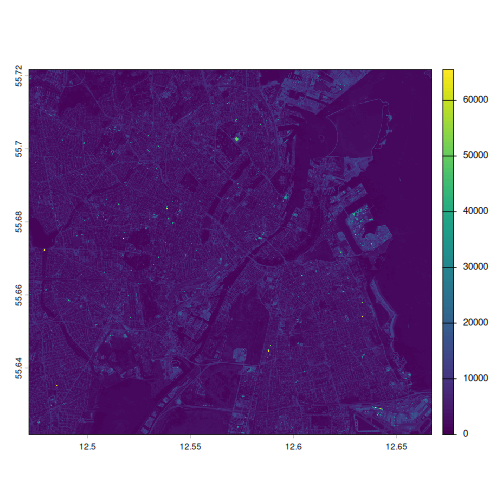
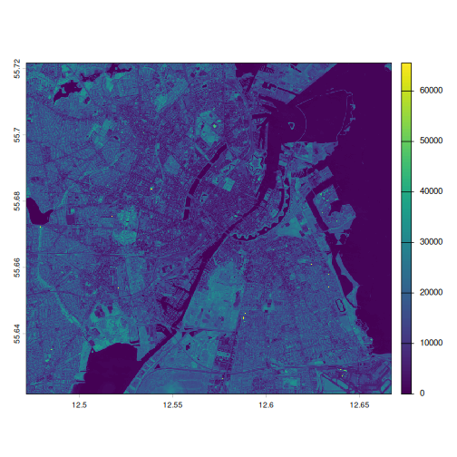
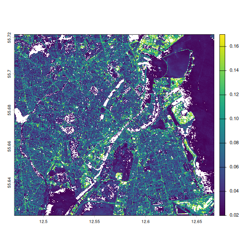
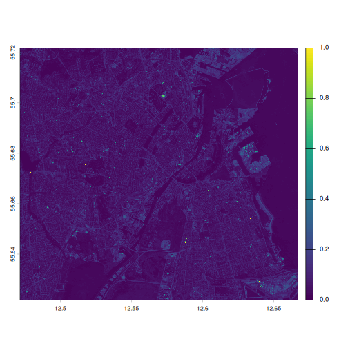
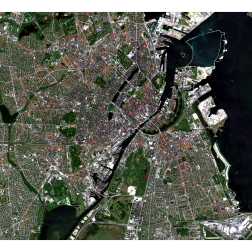
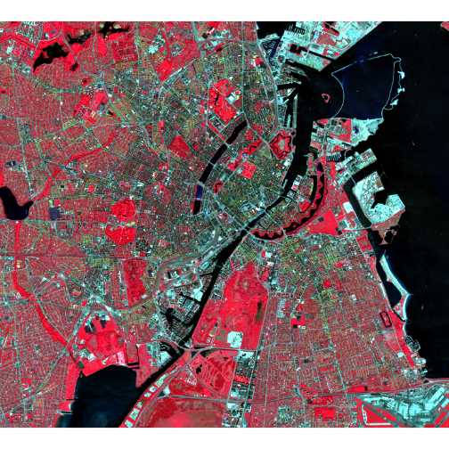
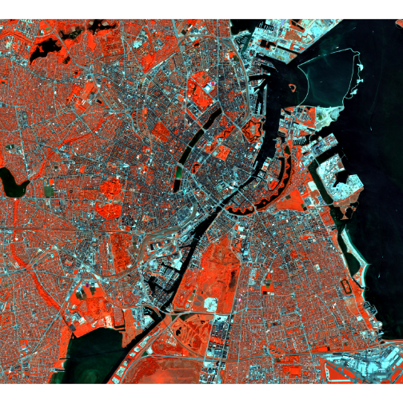
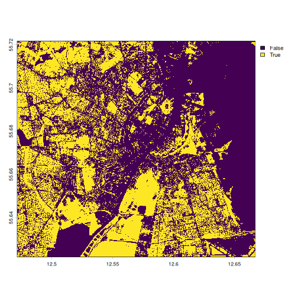
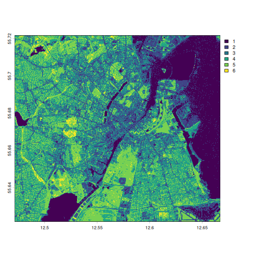
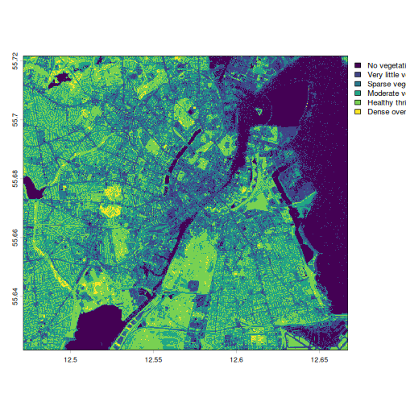

Raster data
Last updated on 2026-08-10 | Edit this page
Overview
Questions
- FIXME
Objectives
- FIXME
We are going to work with spectral raster data from the European Sentinel satelites. These satelites capture images of the planet, recording reflected light from the surface in different spectral bands.
illustration of a sentinel satelite capturing multispectral data
Get the data
In this session we are working with four specific bands:
| Band Number | Band Name | Central Wavelength (nm) | Bandwidth (nm) | File |
|---|---|---|---|---|
| B02 | Blue | 490 | 65 | B02 |
| B03 | Green | 560 | 35 | B03 |
| B04 | Red | 665 | 30 | B04 |
| B08 | Near Infrared (NIR) | 842 | 15 | B08 |
Download the files to a folder in your project named
data, either manually from the links above, or by
copy-pasting this code:
R
urls <- c("https://raw.githubusercontent.com/KUBDatalab/R-toolbox/main/episodes/data/2026-05-25-00_00_2026-05-25-23_59_Sentinel-2_L2A_B02_(Raw).tiff",
"https://raw.githubusercontent.com/KUBDatalab/R-toolbox/main/episodes/data/2026-05-25-00_00_2026-05-25-23_59_Sentinel-2_L2A_B03_(Raw).tiff",
"https://raw.githubusercontent.com/KUBDatalab/R-toolbox/main/episodes/data/2026-05-25-00_00_2026-05-25-23_59_Sentinel-2_L2A_B04_(Raw).tiff",
"https://raw.githubusercontent.com/KUBDatalab/R-toolbox/main/episodes/data/2026-05-25-00_00_2026-05-25-23_59_Sentinel-2_L2A_B08_(Raw).tiff")
download.file(
urls,
destfile = file.path("data", basename(urls)),
mode = "wb"
)
These are raster data, containing cells, approximately 5 by 5 meters, with a recording of the reflected light in different wavelengths, depending on which file we are working with.
We are going to use the library terra, which provides
methods for manipulating and working with spatial data.
After loading terra, we read in all four files using the
rast function:
R
library(terra)
files <- list.files("data/", pattern = ".tiff", full.names = TRUE)
sentinel <- rast(files)
Looking at the data
The four files each contain a spectral band, and those four bands are
now contained in one object, sentinel.
We can access the basic metadata simply by outputting the object:
R
sentinel
OUTPUT
class : SpatRaster
size : 1972, 2178, 4 (nrow, ncol, nlyr)
resolution : 8.985032e-05, 5.066075e-05 (x, y)
extent : 12.47154, 12.66724, 55.62179, 55.7217 (xmin, xmax, ymin, ymax)
coord. ref. : lon/lat WGS 84 (EPSG:4326)
sources : 2026-05-25-00_00_2026-05-25-23_59_Sentinel-2_L2A_B02_(Raw).tiff
2026-05-25-00_00_2026-05-25-23_59_Sentinel-2_L2A_B03_(Raw).tiff
2026-05-25-00_00_2026-05-25-23_59_Sentinel-2_L2A_B04_(Raw).tiff
2026-05-25-00_00_2026-05-25-23_59_Sentinel-2_L2A_B08_(Raw).tiff
names : 2026-05~2_(Raw), 2026-05~3_(Raw), 2026-05~4_(Raw), 2026-05~8_(Raw)The extent of the data and the resolution is given in degrees. One thing we can note is that the names are rather long.
We are going to work with individual layers in this object, and have to refer to their names. A renaming is therefore in order:
R
names(sentinel) <- c("blue", "green", "red", "nir")
We can plot the individual layers:
R
plot(sentinel[["blue"]])

And it is now revealed that we are working with data covering (part of) the Greater Copenhagen area.
Which of the four bands is the most distinct
Try plotting the four different bands, and decide which of them you think is the most distinct.
What is the most distinct is of course a matter of taste, but some would argue that the NIR-band is the one that differs most from the others:
R
plot(sentinel[["nir"]])

It might be useful to look at the summary of the data:
R
summary(sentinel)
WARNING
Warning: [summary] used a sampleOUTPUT
blue green red nir
Min. : 0 Min. : 0 Min. : 157 Min. : 0
1st Qu.: 1881 1st Qu.: 3047 1st Qu.: 1959 1st Qu.: 5872
Median : 3198 Median : 4640 Median : 4266 Median :12629
Mean : 3893 Mean : 5003 Mean : 4785 Mean :12170
3rd Qu.: 5046 3rd Qu.: 6265 3rd Qu.: 6593 3rd Qu.:17753
Max. :65535 Max. :65535 Max. :65535 Max. :65535 Note that spatial data is rather large - each layer in this case contains 4 295 016 cells or observations. By default the summary function for these spatial data objects only return summary data for a random sample of 100 000 observations.
What do we learn from the summary?
Discuss what information we gain from the summary?
We observe that the values in each band in the object have values from approximately 0 to somewhere in the 65000’s. The mean and medians of the three bands blue, green and red are relatively similarly, whereas the NIR-band have much larger values.
We also get at strong indication that the raw data in this object, is probably not reflectances directly. The true values of reflectances would go from 0 - indicating no reflectance at all, to 1, indicating 100% reflectance.
This informs how we need to manipulate the raw data.
summary give us six different summary statistical
parameters.
If we want other parameters we have to extract the raw data for
reflectance. The easiest way is to use the values()
function:
R
sentinel[["blue"]] |>
values(mat = FALSE) |>
sd()
OUTPUT
[1] 2825.729By default values extract the values as a matrix with
one column. Adding mat = FALSE, makes it return the raw
values as a numeric vector, that we can pipe to a function of our own
choice.
Make a histogram of the values in the blue band
Extract the data using values. For a quick result you can use the
base plot function hist
R
sentinel[["blue"]] |> values(mat = FALSE) |> hist()

Bonus: Try comparing with the NIR-band.
Scaling the data
The data we get from Sentinel has been saved as a 16 bit tiff. That means that the reflectanse, which go from 0 - indicating no reflectanse at all, to 1 indicating 100% reflectance, has been encoded as a 16 bit integer, which go from 0 to 65535 (because 2^16 = 65536). This is an effect of choices made during download, so it is always neccesary to inspect the data and take its provenance into account.
In order to scale the raw data to values closer related to the physical world, we need to scale the data.
We do that by dividing all values by 65535. This is surprisingly simple:
R
sentinel <- sentinel/65535
summary(sentinel)
OUTPUT
blue green red nir
Min. :0.0000 Min. :0.00000 Min. :0.002396 Min. :0.0000
1st Qu.:0.0287 1st Qu.:0.04649 1st Qu.:0.029892 1st Qu.:0.0896
Median :0.0488 Median :0.07080 Median :0.065095 Median :0.1927
Mean :0.0594 Mean :0.07634 Mean :0.073016 Mean :0.1857
3rd Qu.:0.0770 3rd Qu.:0.09560 3rd Qu.:0.100603 3rd Qu.:0.2709
Max. :1.0000 Max. :1.00000 Max. :1.000000 Max. :1.0000 Note that data from the Landsat family of satelites have to be scaled differently. Information on how is given in the official documentation from USGS.
Also note that we can acquire data from Sentinel, that is not stored in 16 bit. In that case we will have to scale using a different parameter, or not at all.
This does not affect the plot, but note the difference in scale:
R
plot(sentinel[["blue"]])

Very dark plots
The plots are almost monochromatic. This is to be expected if we look at the histogram of values from the blue band. Almost all observations are in the very low end. 50% of all observations are belov 0.05. When we plot using a colour scale going from 0 to 1, half of the observations will get the darkest colour. About 2/3 of the rest will get the second darkest colour, and the higher value observations drown in a sea of blue.
One way of handling this can be to adjust the scale.
R
plot(
sentinel[["blue"]],
range = c(0.02, 0.17)
)

The range specifies, that the colour scale should have a minimum at 0.02 reflectance, and a maximum at 0.17. Values lower than 0.02 will all get the same colour, as will values higher than 0.17. This results in a larger difference in colours for the values in between, making it much easier to see structure in the data.
The range is chosen to approximately exclude the 2% lowest and 2% highest values.
R
sentinel[["blue"]] |> values(mat = FALSE) |> quantile(probs = c(0.02, 0.98))
OUTPUT
2% 98%
0.01539635 0.16969558 “True” colour images
We can definitely identify Copenhagen from the plots made so far. But they do not look like an aerial or satelite photo of Copenhagen would.
Well, it does, but we are only observing Copenhagen in one colour. We have values for red, green and blue, and if we plot them together, we will get something that looks more like Copenhagen.
The terra package have a function specifically for that.
We specify which bands contains values for reflectance in the red part
of the spectrum, green and blue, and it make a “composite” plot, where
the red band is shown as red, green as green and blue as blue:
R
plotRGB(sentinel, r = 3, g = 2, b = 1,
stretch = "lin")

plotRGB expects values for each band between 0 and 255.
We have more physically relevant values, but the
stretch = "lin" tells plotRGB to “stretch”
these values to fit the range of 0 to 255.
False colours
False colour plots can be used to make it easier to distinguish specific areas. Compared to the previous plot, where the green colours represented the green band, false colour plots have the colours represent bands that are not in their part of the spectrum.
A popular false colour plot shows the NIR band as red, the red band as green and the green band as blue in the composite plot:
R
plotRGB(sentinel, r = 4, g = 3, b = 2,
stretch = "lin")

Because plants reflect ligth in the NIR part of the spectrum, the NIR-band have high reflectance values for areas with vegetation. When we plot the NIR-band as red, we get a map where vegetation is highligted as red.
Make your own false colour composite plot
Chose on your own which bands should be plotted as red, green and blue in your very own false colour plot
As long as it is your own, there is no wrong answer. This version is nice and orangey:
R
plotRGB(sentinel, r = 4, g = 2, b = 1,
stretch = "lin")

What else can we use this for?
Different materials have different properties. Chlorophyl eg absorbs light in the red part of the spectrum. Therefore leaves reflect less red light. They also reflect strongly in the near-infrared part of the spectrum - because it is scattered by internal structures in the leaves.
If we calculate the contrast between reflected red light, and NIR - we get an indication that what we are looking at, is vegetation.
A commonly used index is NDVI
\[ \text{NDVI} = \frac{\text{NIR} - \text{Red}}{\text{NIR} + \text{Red}} \]
The signal we are looking for is high reflectances of NIR and low reflectance of red light. Other stuff reflects NIR, but if it also reflects red light, it is probably not vegetation, which does not reflect red ligt.
Dividing with the sum normalizes the index to go between -1 and 1, and it makes the value relative to the total signal in the two bands - making the measurement less dependent on light intensity.
We can calculate a new channel in the data
R
ndvi <- (sentinel[["nir"]] - sentinel[["red"]])/(sentinel[["nir"]] + sentinel[["red"]])
The new object ndvi is a SpatRaster object just like
sentinel, but with only one “band”:
R
ndvi
OUTPUT
class : SpatRaster
size : 1972, 2178, 1 (nrow, ncol, nlyr)
resolution : 8.985032e-05, 5.066075e-05 (x, y)
extent : 12.47154, 12.66724, 55.62179, 55.7217 (xmin, xmax, ymin, ymax)
coord. ref. : lon/lat WGS 84 (EPSG:4326)
source(s) : memory
name : nir
min value : -1
max value : 1We can plot it, and get an indication of where in Copenhagen we see vegetation:
R
plot(ndvi)

Setting a cutoff where we define areas with an NDVI value larger than 0.4 as vegetation, we can get a clearer map of where there is vegetation in Copenhagen:
R
plot(ndvi > 0.4)

We can also get an indication of how much of Copenhagen that is covered in vegetation. We first extract the values, compare them to 0.4, and calculate the mean, giving us the proprotion of cells in the map with an NDVI indicating vegetation:
R
ndvi_values <- ndvi |> values(mat = FALSE)
(ndvi_values > 0.4) |> mean(na.rm = TRUE)
OUTPUT
[1] 0.4057089Or about 40%
Simple classification
Rather than plotting the simple binary “larger than 0.4, yes/no” values, we would like a more differentiated plot.
Several classifications of vegetation based on NDVI-values exist, this is but one:
| NDVI | Interpretation |
|---|---|
| -1 – 0 | Ratings below 0 typically indicate a complete lack of vegetation. |
| 0 – 0.1 | Very little vegetation, typically barren ground. |
| 0.1 – 0.3 | Sparse vegetation; scrubland or grass. |
| 0.3 – 0.6 | Moderate vegetation; temperate forests; may also indicate unhealthy crops. |
| 0.6 – 0.9 | Typical range for healthy thriving crops. |
| 0.9 – 1 | Dense overgrown vegetation; rainforests. |
Making a SpatRaster object containing these categories is a bit more complicated than we are used to.
We need to make a reclassification matrix, indicating the intervals and the class:
R
rcl <- matrix(
c(
-1.0, 0.0, 1, # No vegetation
0.0, 0.1, 2, # Very little vegetation
0.1, 0.3, 3, # Sparse vegetation
0.3, 0.6, 4, # Moderate vegetation
0.6, 0.9, 5, # Healthy crops
0.9, 1.0, 6 # Dense vegetation
),
ncol = 3,
byrow = TRUE
)
We can then make a new spatRaster object with the classifications
using the classify function:
R
ndvi_class <- classify(x = ndvi,
rcl = rcl,
include.lowest = TRUE)
By default classify does not include the lowest value in
“-1.0, 0.0” in the interval “1”. Setting
include.lowest = TRUE includes -1 in interval “1”
We can then plot it:
R
plot(ndvi_class)

The numbering can be replaced by class-names:
R
levels(ndvi_class) <- data.frame(
value = 1:6,
class = c(
"No vegetation",
"Very little vegetation",
"Sparse vegetation",
"Moderate vegetation",
"Healthy thriving crops",
"Dense overgrown vegetation"
)
)
We now get more a informative legend in the plot:
R
plot(ndvi_class)

Not only can we plot the 6 categories, we can also count how many instances of each category we have, giving a rough indication of the distribution of them in Copenhagen_
R
freq(ndvi_class)
OUTPUT
layer value count
1 1 No vegetation 802489
2 1 Very little vegetation 537254
3 1 Sparse vegetation 857826
4 1 Moderate vegetation 1076517
5 1 Healthy thriving crops 979680
6 1 Dense overgrown vegetation 41249We can then use ordinary tidyverse methods to get the
distribution in percentages:
R
library(dplyr)
freq(ndvi_class) |>
mutate(share = count/sum(count)*100)
OUTPUT
layer value count share
1 1 No vegetation 802489 18.6841955
2 1 Very little vegetation 537254 12.5087805
3 1 Sparse vegetation 857826 19.9725961
4 1 Moderate vegetation 1076517 25.0643362
5 1 Healthy thriving crops 979680 22.8096992
6 1 Dense overgrown vegetation 41249 0.9603925This indicates that the greater Copenhagen area is rather green.
Other spectral indeces exists, but might require additional spectral bands to the ones we have access to here.
- FIXME